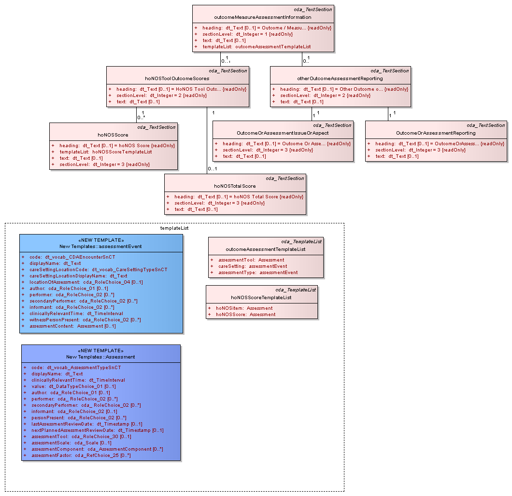

Outcome / Measure / Assessment Information : logical diagram
| Created: | 24/10/2007 10:50:39 |
| Modified: | 27/02/2008 16:06:59 |
 Project: Project: |
|
| Advanced: |
For use capturing outcomes from any Non-HoNOS assessment / outcome activities by issue and by comment <br /><br />This has been left as open as possible regarding usage to enable reporting of anything of note that an HSCP feels may be pertinent to the care of the individual from another assessment type; this will usually only be specific aspects that require highlighting rather than the whole of an assessment / outcome measure. e.g. SAP where the full assessment may be held elsewhere but specific aspects need to be on a national MH related record